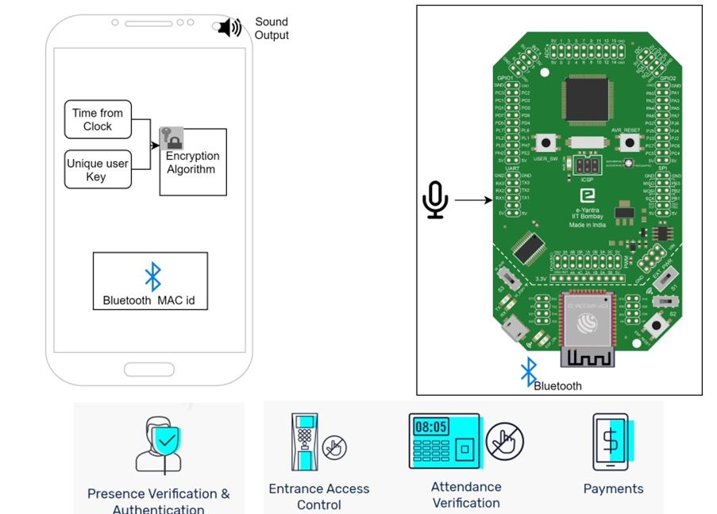
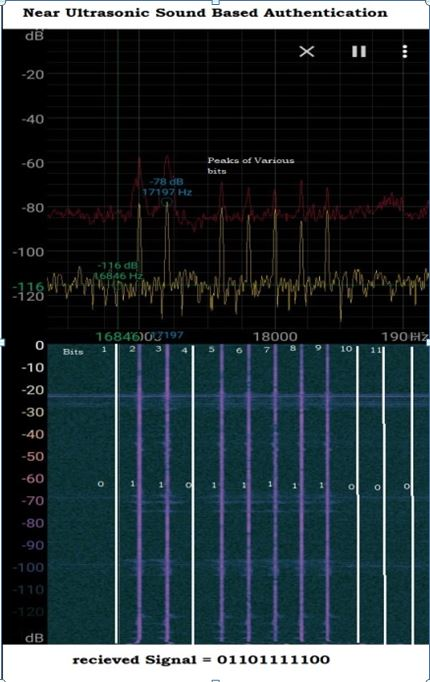
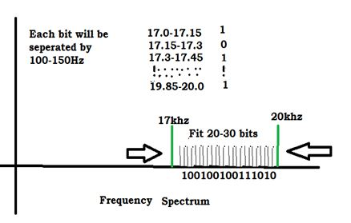

eYFi-Mega Implementation
Our Model :

This was the experimental setup which we constructed to show proof of concept of the Authentication system fir real world scenario. We successfully tested the accuracy,reliability and various other proposed features and came up with this model .
Block diagram of our system
Here a mobile phone will send the audio key and the mic will receive the signal and process the data , this has various application . Detailed working of the same will be explained below

Components required:
-
Jumper wires
-
MAX4466 High gain Microphone (20-20khz)
-
OLED screen (0.96")
-
Smartphone to send Audio key
-
Internet Connectivity (wiFi)
Circuit Schematic:
Working Explained
The whole system works only on sound , whenever a person will approach the authenticating node then he will play the static key ( in future versions we will make that dynamic with Cryptography techniques ) this mic connected to the eYFi Mega will receive the signal and process the incoming signal to get the meaningful data from it . Then once the key is matched with already stored key in the local database then display on the OLED screen the name of the individual and also by making use of https protocol send the details to google sheet based web app which will be configured with our system . Then the login credentials such as Name,Role ,Time will be automatically updated .
Methodology of Audio communication
( Parallel data transfer )
Our fundamental approach is making use of available spectral domain from 17khz to 20khz concurrently together to send the bit information . We will be for this proof of concept utilizing only 4 bits and that can be stretched as long as 25-30 bits easily. Hence we can authenticate in a fraction of a second just by comin in region of interest of the node . without any waiting time or lag Here is the brief overview of the working of our system in a block diagram

Here the below image shows the potential system which can send 25-30 bits of data at once ,so making our system extremely faster and reliable . With improving of FFT algorithms,Window functions,Mic quality and lot of other factors we can substantially increase the coverage range and also the resolution of Bits .
